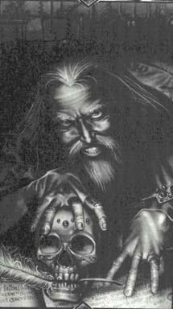

Дворкин БарименМаленький, 5" сильно скрюченный старый горбун. Безумный, трудный для понимания и находящийся абсолютно за пределами реальности даже для королевского дома Амбера, Дворкин - величайший мастер, художник, который способен выплавить реальность из искусства. Рожденный в Хаосе, он бежал, чтобы создать образ Лабиринт Амбера, придав им форму, очертания, линии и объем миру там, где до этого ничего не было. В этом смысле он бог, создатель, творец, "poietes" на языке греков. Говорят, что в юности он был дьявольски ловок, изворотлив и хитер, как любой нынешний житель Амбера. Но говорить, что кто-то знает его - глупое преувеличение. |
 |